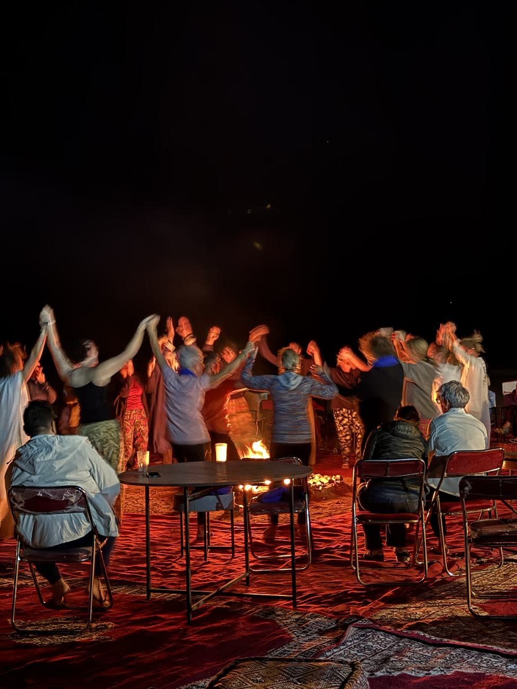
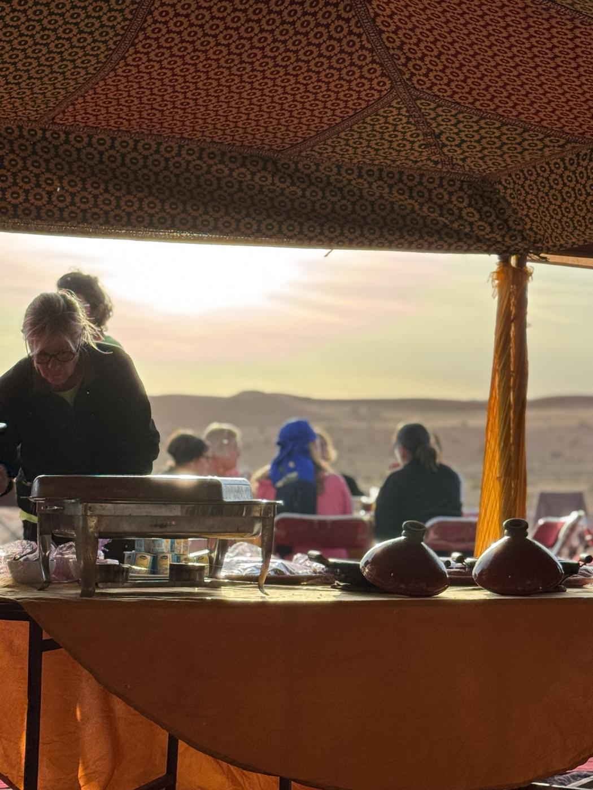
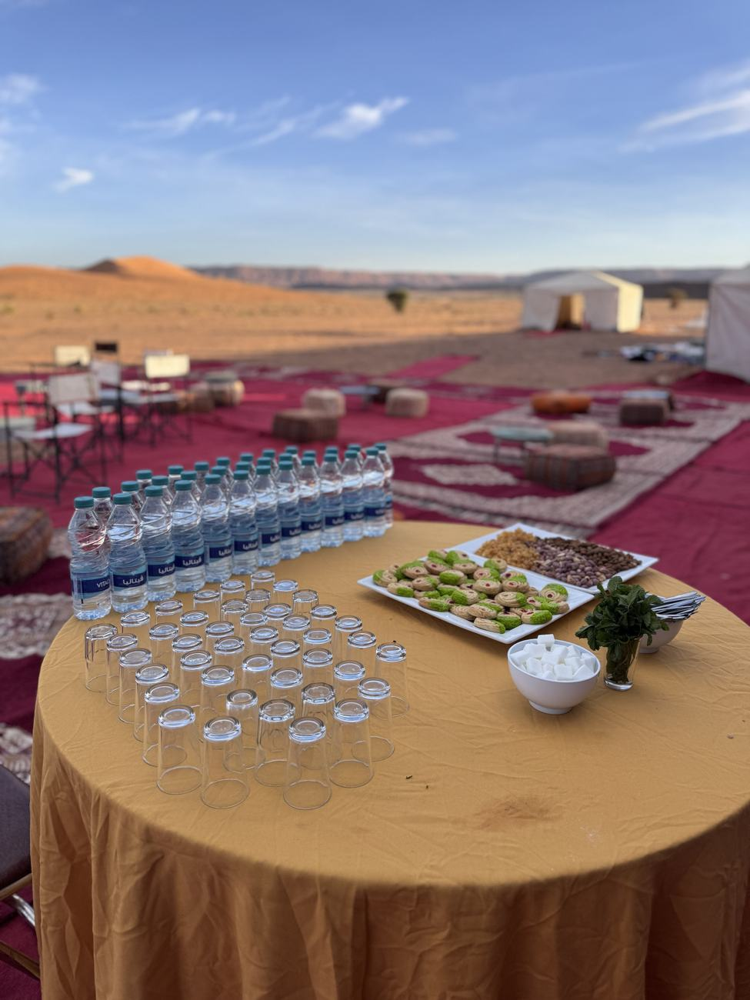

Home / Special Tours / New Year in the Sahara
Count down to midnight by the campfire in Erg Chebbi: a private 3-day festive tour from Marrakech or Fes.
Forget crowded city squares and predictable fireworks. Ring in 2027 or celebrate Christmas under a sky of a million stars in the Sahara. This private festive tour takes you from Marrakech (or Fes) across the Atlas Mountains to the golden dunes of Erg Chebbi, where you count down to midnight by a roaring campfire, champagne in hand, surrounded by dunes, stars and the sound of Berber drums.
Places are limited on the festive dates, and we keep every celebration small so that it stays intimate.
MARRAKECH · TIZI N’TICHKA · AIT BEN HADDOU · DADES · TODRA · ERFOUD · KHAMLIA · MERZOUGA · MARRAKECH
Or from Fes, through the Middle Atlas to Merzouga: see the Fes departure below.
For New Year’s Eve or Christmas Eve, on day 2.
| 5:00 PM | Sunset camel trek into the dunes |
| 6:30 PM | Arrival at the camp: hot mint tea, dates and almond pastries |
| 7:30 PM | Free time to freshen up, climb a dune for photos or rest in your tent |
| 8:30 PM | The 5-course festive Mechoui dinner under the stars |
| 10:00 PM | Berber drums and Gnawa music, dancing barefoot in the sand |
| 10:45 PM | Fire show on the dunes |
| 11:15 PM | Around the campfire: stories, songs and dancing |
| 11:45 PM | Midnight countdown or Christmas celebration |
| 12:00 AM | Champagne toast and sky lantern release over the Sahara |
| 12:30 AM | Stargazing: the Milky Way, Orion and shooting stars |
| Flexible | Back to your heated tent whenever you like |
| Starter | Harira soup with fresh bread and olive oil |
| Salads | Moroccan salads: zaalouk, taktouka, carrot and orange, beetroot |
| Main course | Whole roast lamb (Mechoui), slow-roasted over charcoal for more than 5 hours, with cumin salt, bread and seasonal vegetables. Vegetarian option: stuffed vegetable tagine with couscous |
| Dessert | Moroccan pastries (chebakia, kaab el ghazal), seasonal fruit and mint tea |
| Drinks | Mint tea, fresh juices, mineral water and a champagne toast at midnight |
| Late night | Hot chocolate and “Berber whisky” (mint tea) by the fire |




Staying in Fes? Enjoy the same festive experience by a different route:
| Day 1 | Fes, the Middle Atlas, the cedar forest of Azrou and its Barbary macaques, the Ziz Valley and Merzouga. |
| Day 2 | A full day in Merzouga: desert excursion, sunset camel trek and the festive night. |
| Day 3 | Merzouga, the Todra Gorge and the Dades Valley, then back to Fes, or end in Marrakech. |
Same price, same luxury camp, same celebration.
| Option | Duration | Route | Price from, per person |
|---|---|---|---|
| Classic | 3 days | Marrakech → desert → Marrakech | €450 |
| Extended | 4 days | Marrakech → desert (2 nights) → Marrakech | €580 |
| Grand | 5 days | Marrakech → desert → Fes | €650 |
| Imperial | 7 days | Marrakech → desert → Fes → Chefchaouen | €890 |
The 4-day version adds a full second day in the desert: a morning quad ride, a free afternoon and a second sunset over the dunes. The 5- and 7-day versions continue to Fes and beyond after the celebration.
From €450 per person for the classic 3-day tour. The final price depends on your dates, the number of travellers and the option you choose. Book with a 10% deposit.
| Departure | Celebration | Status |
|---|---|---|
| December 23, 2026 | Christmas Eve in the desert (festive night on 24 December) | Limited places |
| December 24, 2026 | Christmas Day in the desert (festive night on 25 December) | Limited places |
| December 29, 2026 | New Year weekend in the desert (festive night on 30 December) | Limited places |
| December 30, 2026 | New Year’s Eve in the desert: the midnight countdown and the first sunrise of 2027 | The New Year’s Eve date |
| December 31, 2026 | New Year’s Day in the desert (festive night on 1 January, sunrise on 2 January) | Limited places |
The festive night is always on day 2 of the tour. Only the 30 December departure puts the midnight countdown on New Year’s Eve itself. Other dates on request.
The Sahara in winter is warm by day and cold at night.
| Warm jacket or fleece | Nights drop to 0–5 °C |
| Hat and gloves | For the sunrise climb up the dune |
| Thick socks | The sand is cold early in the morning |
| Layers | Days are pleasant, 15–22 °C |
| Comfortable trainers | For the sand and the gorges |
| Sunglasses and sunscreen | The desert sun is strong even in winter |
| A small torch | Handy at the camp at night |
| Camera | You will want to capture every moment |
No need to bring a sleeping bag, heating or towels: the camp provides thick blankets, heated tents and towels.
It includes everything in our 3-day desert tour, plus a 5-course festive dinner, champagne or mulled wine, live music and a fire show, a stargazing session and heated luxury tents for the winter.
A champagne toast (New Year) or mulled wine (Christmas) is included. Wine or beer can be arranged on request for an extra charge. Morocco is a Muslim country, but alcohol is available in tourist places.
In December and January, desert nights can drop to 0–5 °C. The camp has heated tents, thick blankets and hot water bottles. Bring warm layers for the evening around the fire.
Yes. From 2 to 20 people, it is your own private celebration. We can add special touches such as a birthday cake, a surprise proposal or your favourite music.
At least 4–6 weeks before your date if possible. The best camps fill up early for the festive nights.
Yes. See the 4-, 5- and 7-day options above, or ask us to add Fes, Chefchaouen or Essaouira.
The tour runs in all weather. Winter in the Sahara is mostly clear and dry, and if it rains the camp has an indoor dining area.
No. You can go to the camp by 4×4 instead. The camel ride is gentle and suitable for most ages.
Yes. Children love the desert. The camel ride is fine from age 4, younger children ride with a parent, and the dinner can be adapted for kids.
Places are limited for this week. Send us your dates and we will reserve the camp for you.